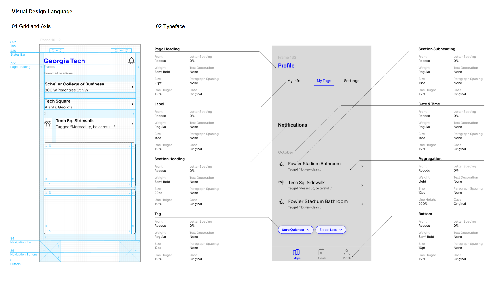
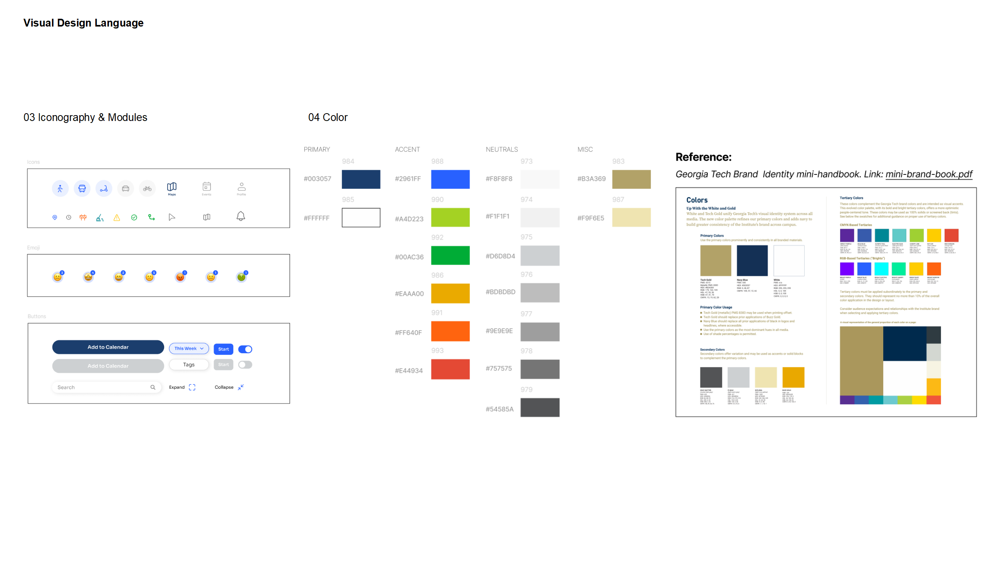
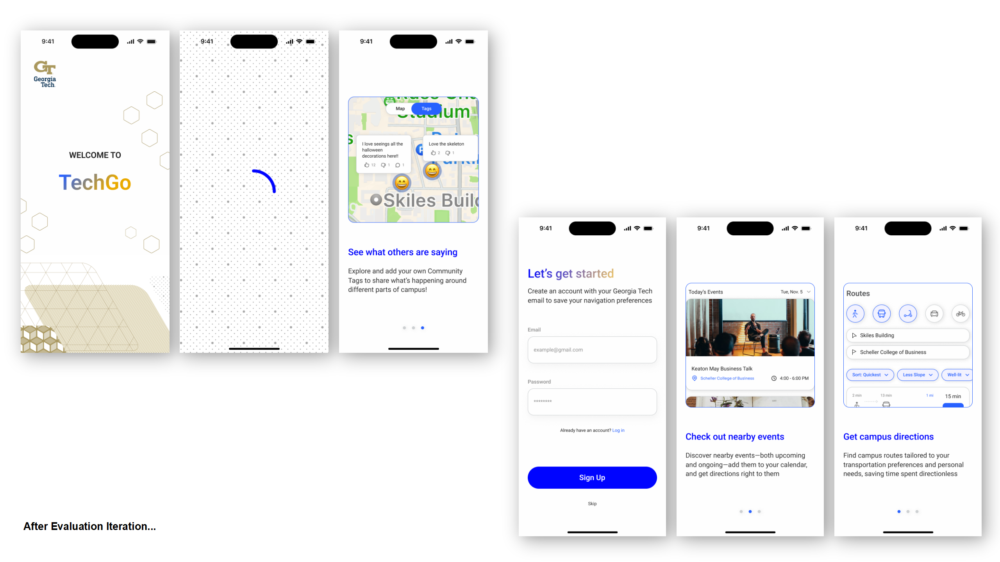
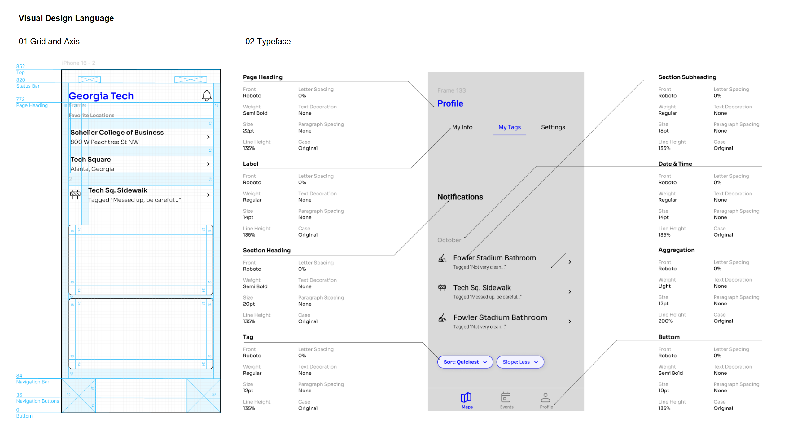
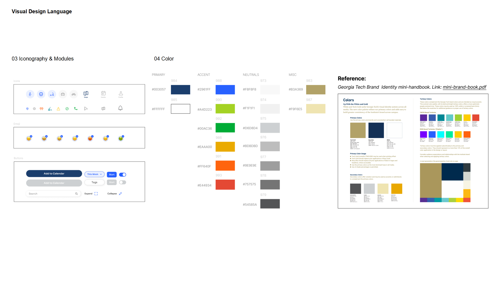
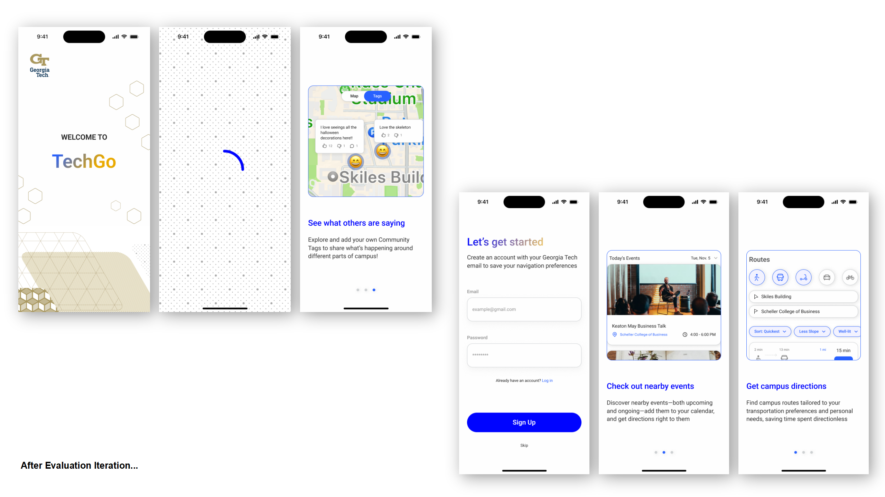
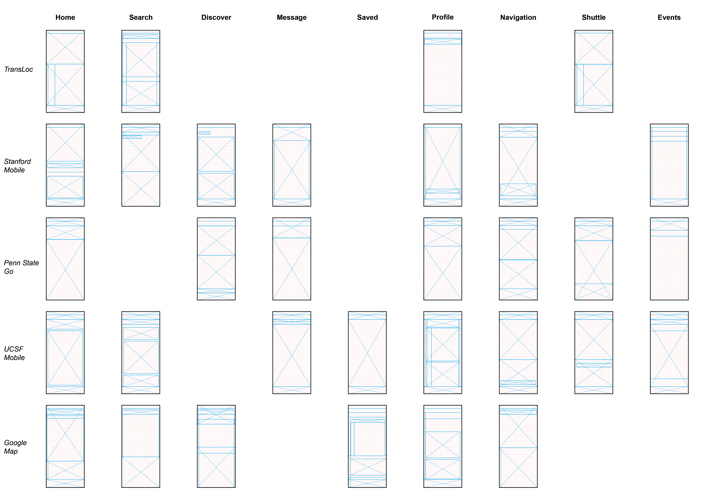
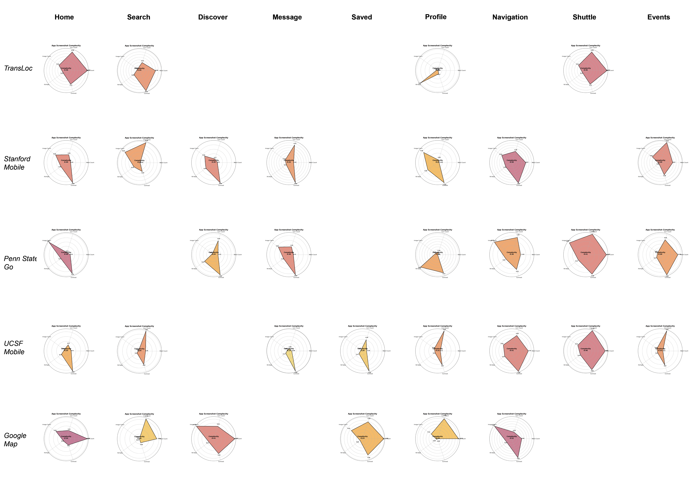

TechGo
-
The project originates from the Human-Computer Interaction Studio assignment at Georgia Tech. The goal of the project is to optimize Georgia Tech's current student public transportation software, TransLoc. This project focuses on high-fidelity prototype design and the formulation of design principles.
1.User Study
We employed a combination of qualitative and quantitative research methods to study user behavior and habits during campus commuting. A total of 77 survey responses were collected, and semi-structured interviews were conducted with 10 individuals. Through the analysis of key points from the semi-structured interviews, we identified three main user feedback points:
I encounter many issues when navigating and commuting on the Georgia Tech campus.
I use the tools I am most familiar with or most comfortable using to navigate the campus.
My confidence in navigating different areas of the campus varies.
2.Design Visual Language
The project addresses the challenges students face while commuting on campus, such as campus services and map navigation. Given the scope, we selected campus navigation service examples from three universities (Stanford Mobile, Penn State Go, USC Mobile), along with TransLoc and Google Maps, for analysis to gain further insights. Additionally, Georgia Tech has released official brand guidelines, so we also studied these guidelines to ensure our design concepts seamlessly align with Georgia Tech's brand identity. These case analyses are divided into 3 categories: color composition, grid and axis structure, and visual complexity. We used Adobe Illustrator to analyze the grid and axis structure of each case and utilized Python to evaluate their visual complexity.
3.High-Fidelity Prototype Evaluation and Iteration
For our high-fidelity prototype design, we selected 4 students from Georgia Tech’s Human-Computer Interaction program to conduct a simplified user feedback and usability test. The results revealed that the current design has a steep learning curve, and users would benefit from an introductory guide during login to help them better understand the application’s features. Based on this feedback, we further iterated on the high-fidelity prototype to improve user onboarding and overall usability. -
Design Type: UX Design, UI Design
Project Type：Graduate Studio Work, Human-Computer Interaction Program, Georgia Institute of Technology
Time: 2024.8-2024.12
Instructor：Dr.Lynn Dombrowski
Collaborator: Christine Taylor、Isabella Sirianni、Jeremy Chen
Main Contributions:
1. User Research Phase: Created user questionnaires and conducted semi-structured interviews with 5 users;
2. Design Research: Studied 5 case studies and Georgia Tech’s brand identity, independently developing a visual language guide for the iOS user interface system. Used Adobe Illustrator, Figma, and Python to ensure consistency across various interface designs;
3. Storyboarding and Concept Development: Created 5 design concepts' storyboards using Procreate, Adobe Illustrator, and Adobe Photoshop. Collected user feedback to inform design decisions;
4. Accessibility Design Leadership: Led the accessibility design of the app's interactive map and profile features. Based on feedback from 4 users, iterated 15 wireframes, improving accessibility by 10%;
Skill：Figma、Python、Procreate、Adobe Illustrator、Adobe Photoshop



